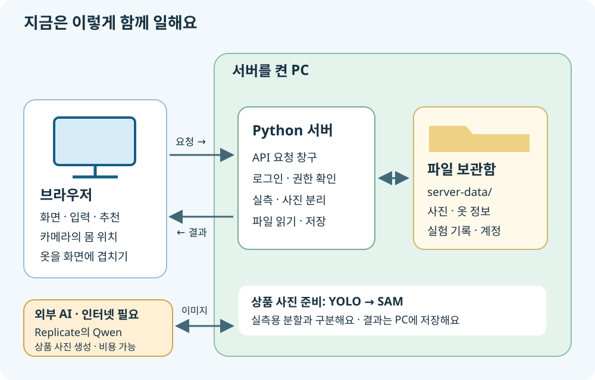
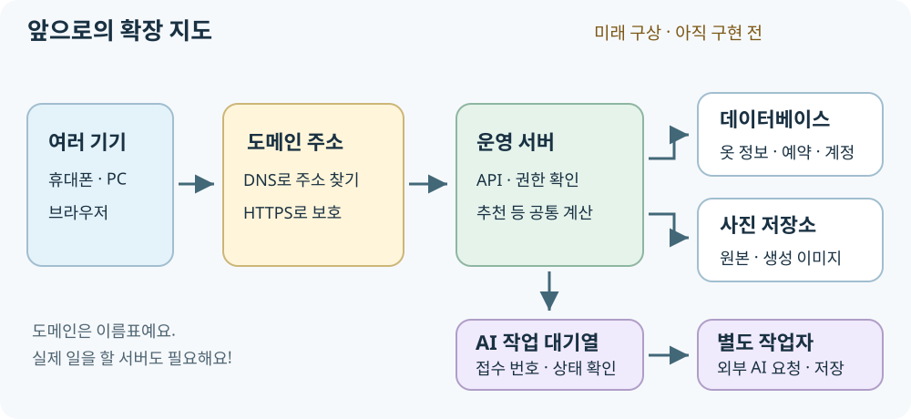

브라우저 · 안내 데스크
HTML로 글과 버튼을 놓고, CSS로 꾸미고, JavaScript로 움직여요. 입력 확인, 추천 점수 계산, 가상 입어보기의 몸 위치 찾기와 옷 표시처럼 브라우저 안에서 하는 계산도 있어요.
옷 사진 한 장은 어디로 여행할까요?
화면은 안내 데스크, 서버는 일하는 작업실, 저장소는 기록 보관함이라고 생각해 봐요.
버튼을 누르면 누가 계산하고, 사진은 어디에 남을까요? 지금 만든 구조와 앞으로 만들 구조를 나누어 알아봐요.
1 · 지금의 구조

HTML로 글과 버튼을 놓고, CSS로 꾸미고, JavaScript로 움직여요. 입력 확인, 추천 점수 계산, 가상 입어보기의 몸 위치 찾기와 옷 표시처럼 브라우저 안에서 하는 계산도 있어요.
요청을 받고 로그인·권한을 확인해요. 사진의 기울기를 보정하고 옷을 분리해 실측을 계산해요. 등록 정보와 사진을 읽고 저장하는 일도 맡아요.
AI 상품 사진은 서버가 Replicate의 Qwen Image Edit Plus에 요청해요. 입력 이미지는 외부 서비스로 보내지고, 생성 결과는 서버가 내려받아요. 이 단계에는 인터넷과 비용이 필요할 수 있어요.
2 · 요청 → 계산 → 저장 → 응답
브라우저가 사진과 배경 종류를 서버의 POST /api/garments/analyze로 보내요. POST는 “이 자료로 일을 해 줘”에 가까워요.
OpenCV 등으로 배경 표식을 읽고 기울기를 보정해요. 실측용 옷 영역은 너비에 GrabCut, 기장에 YOLO→GrabCut을 써요. 알려진 배경 길이와 사진 속 픽셀 길이를 비교해 cm를 계산해 돌려줘요.
학생이 옷 종류와 치수를 고친 뒤 저장을 눌러요. POST /api/garments 요청을 받은 서버가 사진과 옷 정보를 파일로 남겨요. 자동 계산을 무조건 정답으로 여기지 않아요.
등록 화면이 POST /api/garments/{id}/product-photo를 요청해요. 서버 PC의 YOLO→SAM으로 상품 사진용 옷을 오려낸 뒤 외부 Qwen에 보내요. 실측용 분할과는 다른 절차예요. 완료 안내까지 화면을 열어 둬요. 실패해도 등록된 옷과 실측값은 남아요.
GET /api/garments는 “저장된 옷 목록을 보여 줘”라는 요청이에요. 서버는 JSON으로 정보를 답하고, 브라우저가 카드로 꾸며요. 선생님은 권한 확인 후 AI 사진을 다시 만들 수 있어요.
식당에서 메뉴 이름과 주문 방법을 맞추듯, 컴퓨터끼리도 주소·보낼 자료·돌려줄 결과를 약속해요. 그 창구가 API예요. FitShare에는 이미 API가 있어요. 앞으로 처음 만드는 것이 아니라, 맡길 일을 더 늘리는 거예요.
JSON은 {"name": "티셔츠", "widthCm": 32}처럼 이름표와 값을 짝지은 메모예요. 위 예시는 설명용이며 실제 응답에는 다른 정보도 있어요.
3 · 보관함은 어디에 있을까요?
기본 보관함은 프로젝트 안의 server-data/예요. 실행 설정으로 위치를 바꿀 수도 있어요. 지금은 이 앱의 주요 데이터를 데이터베이스 대신 폴더와 JSON 파일로 관리해요.
server-data/garments/
옷마다 폴더가 있고 등록 사진, 분리한 옷 사진, AI 상품 사진, garment.json 정보가 들어가요. index.json은 목록을 찾는 목차예요.
server-data/experiments/
실험 회차별로 사진과 측정 기록을 보관해요. 페이지를 새로 열어도 서버 파일에서 다시 읽을 수 있어요.
계정·로그인 정보는 서버 쪽에서 관리해요. 일부 화면 설정과 임시 상태는 브라우저에도 남을 수 있어요. 브라우저 저장과 서버 저장은 서로 달라요.
가상 입어보기의 카메라 영상은 현재 브라우저에서 처리하고 서버로 보내거나 저장하지 않아요. 등록하려고 보내는 옷 사진과는 구분해요.
4 · 언어, 프레임워크, 라이브러리
http.server, ThreadingHTTPServer, SimpleHTTPRequestHandler로 만들었어요.server.py: 웹 파일 제공, API 주소 연결, 로그인·권한 확인, 저장 요청 처리tools/vision_pipeline.py: 사진 보정과 실측 계산tools/garment_segmentation.py: 상품 사진용 YOLO·SAM 분리tools/replicate_product_photo.py: 외부 Qwen 상품 사진 생성 요청modules/recommendation.js: 브라우저의 추천 계산js/virtualTryOn/: 브라우저의 카메라·몸 위치·옷 표시이 페이지의 파일명은 코드 지도를 위한 설명이에요. 공개 사이트에서 계정 파일이나 실제 저장 사진을 열도록 연결하지 않아요.
5 · 앞으로 만들 모습 · 아직 구현된 것은 아니에요

도메인은 fitshare.example처럼 기억하기 쉬운 주소 이름이에요. 이 주소는 설명용 예시예요. DNS는 이름에 맞는 서버 주소를 찾아줘요. 도메인만 산다고 서버가 생기지는 않아요. 늘 켜 둘 운영 서버와 연결하고 HTTPS로 오가는 자료를 보호해야 해요.
현재 브라우저에서 하는 추천 점수 계산 등을 서버 API로 옮기면 여러 기기에 같은 규칙을 적용하기 쉬워요. 저장·권한에 중요한 판단은 서버가 확인해야 해요. 다만 카메라 영상처럼 개인정보와 반응 속도가 중요한 일은 계속 브라우저에 둘 수 있어요. 모든 계산을 무조건 서버로 옮기지는 않아요.
옷 정보·예약·계정은 데이터베이스로, 사진은 전용 파일 저장소로 나누는 방법을 검토해요. 동시에 수정해도 기록이 엉키지 않게 하고 백업·복구도 준비해요. 사용자가 늘면 서버 역할을 나눌 수 있어요.
“요청을 받았어요”라는 작업 번호를 먼저 주고, 별도 작업자가 처리하게 할 수 있어요. 화면은 진행 상태를 다시 물어봐요. 실패·재시도·비용 제한을 관리하고, API 비밀키는 브라우저에 넣지 않아요.
6 · 내 말로 설명해 봐요
아니요. 정상 저장됐다면 서버 PC의 파일로 남아 있어 다시 읽어요. 단, 삭제·디스크 고장에 대비한 백업은 따로 필요해요.
도메인은 주소 이름일 뿐이에요. 실제 일을 할 서버가 켜져 있고 연결 가능해야 해요. PC를 대신할 운영 서버를 준비해야 계속 서비스할 수 있어요.
이미 옷 등록·조회·실측 등의 API가 있어요. 앞으로는 필요한 로직을 더 옮기고, 더 많은 사람도 안전하게 쓰도록 확장하는 거예요.
한 문장 정리: 브라우저가 부탁하고, 서버가 계산·보관하며, 필요한 AI는 외부에 요청해요.